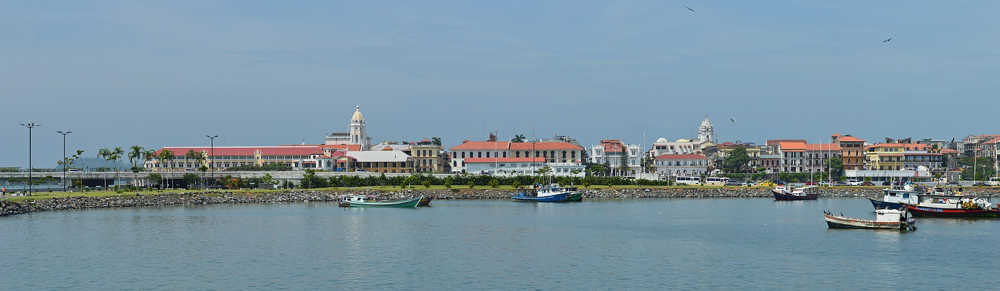
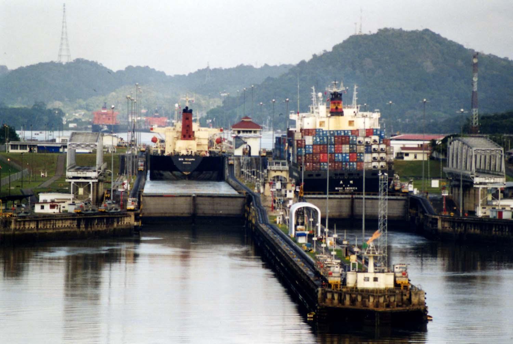

🇵🇦 Панама: полные сутки
Ужин в Casco Viejo, ночью шлюзы, днём канал и город, покупки и дьюти-фри PTY.
🇵🇦 На этом шаге
Полные сутки, а не транзит: ужин в Casco Viejo, ночной выезд на расписание шлюзов, днём Панамский канал и город, покупки (mola, tagua) и дьюти-фри PTY перед вылетом 22:00.
2-я: 06.11 (17:12) → 07.11 (22:00) — полные сутки!
⚠️ Это не «ночь», это ~29 часов в Панаме. Прибытие 06.11 в 17:12, вылет только 07.11 в 22:00. Полноценный день — суббота 07.11.
Почасовой план
| Время | Что делать |
|---|---|
| 06.11 17:12 | Прилёт PTY → таможня + багаж ~40–60 мин |
| 06.11 18:30 | Uber/taxi в центр ~$25–35 (25–40 мин) → заселение ~19:30 |
| 06.11 20:00 | 🍽️ Ужин в Casco Viejo (см. еда) — вечером самый живой район |
| 06.11 22:00 | Смотреть расписание шлюзов на pancanal.com — выбрать корабль на 07.11 (~10:00–12:00) |
| 07.11 08:00 | Завтрак, сборы |
| 07.11 09:00–11:15 | 🚢 Панамский канал, смотровая Miraflores (билет ~$20, открытие 09:00). Главное — поймать проход судна по расписанию |
| 07.11 11:45 | Uber до Casco Viejo (~10 мин) |
| 07.11 12:00–13:00 | 🐟 Обед: Mercado de Mariscos — ceviche, пан-де-камарон ($3–6) |
| 07.11 13:00–16:00 | 🏛️ Casco Viejo пешком: Plaza de Francia, Catedral, Palacio de las Garzas + закупки ремёсел (mola, tagua — см. покупки) |
| 07.11 16:00–18:00 | 🌇 Amador Causeway: вид на скайлайн, закат 17:30–18:00 (опционально: Biomuseo ~$22, 2–3 ч) |
| 07.11 18:15 | Закупки в супермаркете (Riba Smith / Super 99): кофе, шоколад — или сразу в аэропорт |
| 07.11 19:30 | Выезд из города → в PTY к 20:30 (сдача багажа за 1.5 ч) |
| 07.11 20:30–21:45 | 🛍️ Дьюти-фри зона вылета PTY — алкоголь и тяжёлое в сданный багаж (см. покупки) |
| 07.11 22:00 | ✈️ Вылет TK 904 |
Вариант Б — если хочется пляжа вместо канала: утро → паром на Isla Taboga (~30 мин, пляж, форт; уточнить расписание на причале), возвращение к 16:00 → Amador/Casco Viejo вечер → аэропорт. Канал тогда пропускаем.
- Отель: селиться в Casco Viejo / Cinta Costera — тогда весь день 07.11 пешком, без дороги через город. Брони пока нет → чек-лист
- Валюта: доллар США (балбоа — только монеты, бумажных нет). Цены в $.
- Часовой пояс: UTC-5 (на час впереди Коста-Рики).
- Виза: для россиян не нужна, до 90 дней. Нужны: паспорт (≥6 мес), обратный билет, бронь отеля, могут спросить ~$500 на человека.
- Миграционная форма Tarjeta de Turista — выдают в самолёте/на границе, вторую часть сохранить до выезда.
- Трансфер: Uber/такси из PTY в центр ~$25–35, 25–40 мин.
- Ещё варианты дня: нацпарк Soberanía + Pipeline Road (обезьяны, полдня), Мар-дэль-Сур (рыбаки, креветки), Isla Saboga.


📖 Инструкция D — Пограничный контроль
| Граница | Что предъявить | Памятка |
|---|---|---|
| Россия → Турция | Загран | Безвиз 60 дней |
| Транзит IST | Ничего (airside) | Не выходить из транзитной зоны |
| Турция → Панама | Загран ≥6 мес, бронь отеля, обратный билет, ~$500 | Заполнить Tarjeta de Turista, вторую часть не терять |
| Панама → Коста-Рика | Загран ≥6 мес, билет SJO→PTY, бронь Occidental | Миграционная карта КР, штамп хранить до вылета |
| Коста-Рика → Панама | Загран ≥6 мес, билет PTY→IST | Штамп выезда не выбрасывать |
| Панама → Турция | Загран, продолжение маршрута | Проверят наличие вылета из Турции |
| Турция → Россия | Загран | — |
Панама
| Правило | Детали |
|---|---|
| Виза | Не нужна для россиян, до 90 дней в течение 180 дней |
| Паспорт | ≥ 6 месяцев срока действия, 1 пустая страница |
| Обязательно иметь | Обратный/продолжающий билет (TK 904), бронь отеля, могут спросить ~$500 на человека |
| Миграционная форма | Tarjeta de Turista — выдают в самолёте/на границе. Вторую часть СОХРАНЯТЬ до выезда |
| Валюта | Доллар США. Бумажных бальбоа нет, только монеты |
| Часовой пояс | UTC-5 (на час впереди Коста-Рики, на 8 часов позади Москвы) |
| Связь | eSIM/роуминг; местные операторы — Cable & Wireless, Claro, Movistar |
| Такси из PTY | Договариваться о цене ДО поездки. В центр города ~$25–35 |
| Uber | Работает в Панама-Сити |
| Опасности | Casco Viejo ночью — по краям лучше не гулять; в центре города карманники |
| Транзит < 9 ч | Можно не выходить из транзитной зоны (багаж до конечного) — у нас остановки дольше, поэтому проходим полный контроль |
06–07.11 — Пограничный контроль в Панаме (2-я остановка, сутки!)
- Прибытие 06.11 в 17:12, вылет 07.11 в 22:00 — ~29 часов, нужен отель на эту ночь
- Валюта — доллар США, UTC-5
- Лайфхак: ужин в Casco Viejo, днём — Panamá Canal (Miraflores) и Casco Viejo
06–07.11 — Полные сутки в Панаме (а не одна ночь!)
- Прилёт: 06.11 в 17:12 (PTY), вылет: 07.11 в 22:00 (TK 904) — это ~29 часов
- Валюта: доллар США. Часовой пояс UTC-5
- Лайфхаки:
- Ужин в Casco Viejo (исторический центр, ~15–20 мин от аэропорта)
- На день: Panamá Canal (Miraflores), Casco Viejo, Amador Causeway, тропа в Soberanía
- Если хочется купаться — Isla Taboga (паром ~30 мин)
- Отель на эту ночь нужно забронировать заранее — лучше в Casco Viejo, тогда весь день 07.11 пешком
- 06.11 вечером — посмотреть расписание шлюзов на pancanal.com и выбрать корабль на 07.11: в Miraflores интересно именно проход судна, а не просто смотровая
- Покупки (mola, tagua, кофе) — днём в Casco Viejo до 16:00, лавки вечером закрываются; алкоголь — дьюти-фри PTY после 20:30 → покупки
- Выезд в аэропорт к 20:30 (за 1.5 часа)
- Подробный почасовой план и вариант с пляжем → план поездки
🌆 Панама — где поесть (06–07.11)
Валюта: доллар США — цены прямо в $, балбоа-монеты = монеты по курсу 1:1.
| Где | Что | Цена |
|---|---|---|
| Casco Viejo | Лучший район для ужина: колониальные улочки, рестораны, бары | $10–30 |
| Уличная еда (food carts) | Patacones, tamal, empanadas | $1–4 |
| Supermercado (Riba Smith, Super 99, El Rey) | Готовая еда, салаты, сэндвичи | $3–8 |
| Рестораны у Amador Causeway | Вид на skyline города | $12–30 |
| Mercado de Mariscos | Рыбный рынок и ceviche — свежайшее | $3–6 |
Что попробовать в Панаме:
- Sancocho — национальный куриный суп с кукурузой и кинзой
- Ropa vieja — тушёная говядина с перцем
- Ceviche — местный, с перцем и луком
- Hojaldras — жареные булочки на завтрак
- Patacón — жареный зелёный банан
- Seco herrerano — местный тростниковый напиток (с молоком — «seco con leche»)
- Café de Boquete — панамский кофе
Лайфхак: в Панаме дороговизна — в туристических зонах. Ужин в Casco Viejo выйдет дешевле, чем у отеля рядом с аэропортом.
🇵🇦 Панама — где и что покупать
Валюта: доллар США. Монеты-балбоа = монеты 1:1.
| Где покупать | Что искать |
|---|---|
| Casco Viejo (исторический центр) | Mola, tagua, панамский кофе, ликёры, ремёсла — лучший выбор и цены |
| Mercado de Artesanías de Panamá (рядом с Casco Viejo) | Mola, плетение, ремёсла — гигантский рынок местных мастеров |
| Emberá Village / ремесленные лавки | Корзины Emberá, плетение |
| Супермаркеты (Riba Smith, Super 99, El Rey) | Панамский кофе, шоколад, специи |
| Mercado de Mariscos (рыный зал у Casco Viejo) | Свежая рыба и закуски — это еда, не сувениры: съесть на месте |
| Аэропорт PTY (07.11) | Дьюти-фри: алкоголь, кофе, шоколад |
Лайфхаки по Панаме:
- mola покупай у ремесленников, а не в туристических лавках у аэропорта — в 2–3 раза дешевле и качественнее
- Geisha-кофе ищи в специализированных кофейнях в Casco Viejo или в Boquete-лавках; в дьюти-фри он тоже есть, но выбор меньше
- Не гонись за «Panama hat» — настоящая панамка делается в Эквадоре (точнее, в Montecristi). Если берёшь — понимай, что это сувенир, а не эталон
- В Панаме алкоголь дешевле, чем в Коста-Рике и в России — бери здесь
Тактика по суткам 06–07.11 (подробный план дня → план поездки):
| Когда | Что покупать |
|---|---|
| 06.11 вечер | Только разведка: ужин в Casco Viejo, запомнить лавки с mola |
| 07.11 13:00–16:00 (Casco Viejo) | Основная закупка: mola, tagua, sombrero pintao, ремёсла, панамский кофе — городские цены |
| 07.11 18:15 (супермаркет) | Кофе Café Durán, шоколад, местные соусы — дёшево и в багаж |
| 07.11 20:30–21:45 (дьюти-фри PTY, зона вылета) | Последнее окно: алкоголь и жидкое в сданный багаж (2 места до Москвы) |
- ⚠️ В субботу 07.11 Mercado de Artesanías и лавки Casco Viejo работают днём — после 18:00 многие закрываются: ремёсла покупать до 16:00, не откладывать на вечер.
- 🚫 Не везти: керамику/стекло без жёсткой упаковки, воду и напитки (в багаже — не ради этого), тяжёлые фрукты и овощи (на границе не нужны, везти бессмысленно).
Из Панамы
| Что | Цена | Почему взять |
|---|---|---|
| Mola (мola de Guna) — текстильное панно или сумка аборигенов Гуна | $15–60 | ⭐ Главное. Ручная работа, вырезной текстиль в несколько слоёв. Уникально, такого нет нигде в России. Берётся как панно на стену или как сумка |
| Изделия из tagua — «растительная слоновая кость» (орех пальмы) | $5–18 | Брелок, фигурка, пуговицы. Легко, дёшево, необычно. Отличный подарок |
| Кофе Boquete / Geisha — панамский | $10–20 (Boquete), $25–60 (Geisha) | Geisha — один из самых дорогих кофей мира, выращен именно в Панаме. Премиальный подарок |
| Корзина Emberá — плетение коренных жителей | $10–25 | Полезная и памятная: в неё сложится всё, что куплено |
| Sombrero pintao — тканая шляпа из провинции Coclé | $15–40 | Национальный символ Панамы (не «панамка» из Эквадора). Объёмная — только если хватит места |
| Панамский ликёр из кофе (licor de café) | $10–20 | Необычный аперитив, у нас почти не встречается |
| Шоколад из панамского какао | $5–12 | Дешевле, чем колумбийский, и вкуснее массового |
| Дата | Этап | Питание | Вода |
|---|---|---|---|
| 06–07.11 | Панама, сутки | Ужин, завтрак, обед, ужин | Вода |